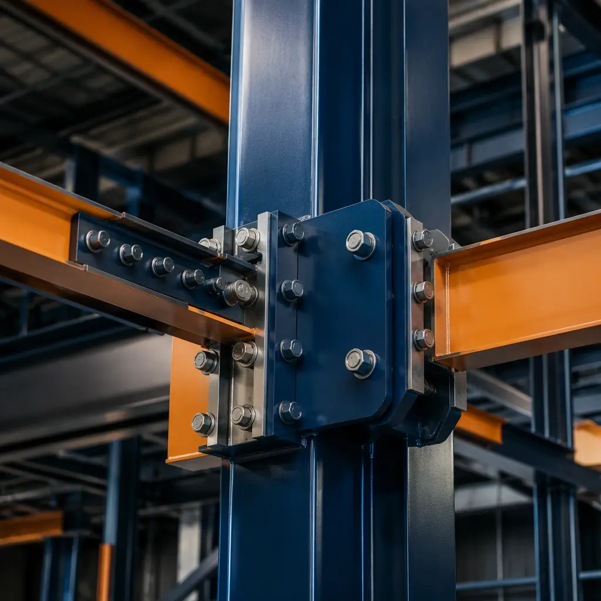
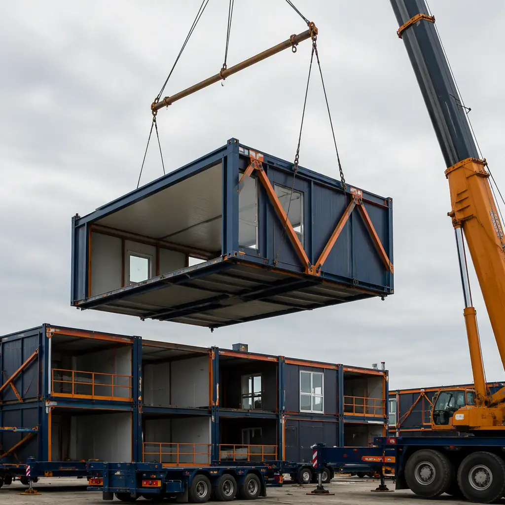

Most buildings are demolished the way a car is crushed at a scrapyard: everything goes into the same pile, and what cannot be separated economically goes to landfill. The construction industry generates approximately 600 million tons of demolition debris annually in the United States alone, and less than 30% of it is recycled into new construction materials. The rest — a mixture of concrete, wood, drywall, insulation, wiring, and plastics, all fused together by decades of occupancy and the irreversible joining methods used during construction — becomes fill for road embankments or, more commonly, landfill volume. This is not primarily a failure of recycling technology. It is a failure of design: the building was never designed to come apart. Modular construction, by its nature, was. This article examines how factory-built modules create options that conventional construction cannot: relocation, vertical expansion, component-level reuse, and structured material recovery at end of life.
![Aerial view of modular prefabricated building showing modules being craned off existing structure for relocation, building being systematically disassembled with individual modules lifted by crane onto flatbed trucks, clean deconstruction process with factory-assembled modules maintaining their integrity during removal, climate-resilient prefab design with steel frame structure visible at module seams, dark navy structural elements with warm steel orange accents on module corner connections, professional photography](../generated/dfd-modular-hero.webp)
The Reversible Connection — Bolts Instead of Welds, Gaskets Instead of Caulk
Conventional construction joins materials irreversibly. Concrete is poured around rebar that will never be separated from it. Drywall is screwed to studs and taped with joint compound that fuses the panels into a monolithic surface. Roofing membranes are heat-welded at seams. Plumbing is solvent-cemented. Electrical conduit is buried in concrete slabs. At demolition, the only economically viable separation method is the excavator's hydraulic shear, which reduces everything to mixed debris. The building is effectively a single object — one that happens to contain useful components, but from which those components cannot be extracted without destroying them.
Modular construction replaces irreversible joining with mechanical connections that are designed to be undone. Module-to-module structural connections use high-strength bolts at the corner castings, torqued to a specified value and accessible from the module exterior. Removal is the reverse of installation: unbolt, lift, transport. MEP services connect at the module interface using mechanical couplings (Victaulic-style for plumbing, bolted busbar connections for electrical, flanged duct connections for HVAC) rather than soldered, solvent-welded, or taped joints. Waterproofing at module-to-module joints uses compression gaskets and mechanically fastened flashing rather than field-applied sealant that bonds permanently to both surfaces. The result is a building where every module can be separated from its neighbors, lifted off, and transported away with its interior finishes, MEP systems, and structural integrity intact. This is not a theoretical capability — it is the same mechanical reversibility that makes modular installation possible in the first place. The connections that allow modules to be assembled are, by definition, connections that allow them to be disassembled.
Relocation — When the Building Outlasts the Site
Buildings are typically demolished not because they are structurally unsound, but because the site is worth more without them. A 30-year-old office building on a parcel that has been rezoned for high-density residential is demolished regardless of the condition of its steel frame, its mechanical systems, or its interior finishes. The demolition cost (typically $8–12 per square foot) and the loss of the building's residual value are simply absorbed into the land acquisition cost and written off against the new development's pro forma. In a conventional building, there is no alternative: the building cannot be moved, so its value is destroyed when the site's highest and best use changes.
A modular building can be relocated. The module connections are unbolted, the modules are craned onto flatbed trucks in the reverse sequence of their installation, and they are transported to a new site where they are reinstalled on a new foundation. The relocation cost — typically 30–50% of new construction cost, depending on transport distance and the extent of module refurbishment required — preserves 50–70% of the building's asset value rather than destroying 100% of it. For a 50,000 sq ft commercial building with a replacement cost of $12 million, the difference between demolition (recovering $0 of asset value) and relocation (recovering $3–6 million in preserved asset value) is a $3–6 million swing in the project economics. This option value is not captured in conventional construction cost comparisons because conventional buildings do not have it. For developers evaluating long-term asset flexibility, the relocation option becomes particularly valuable in markets where zoning changes are anticipated, where lease terms are shorter than the building's physical lifespan, or where the building serves a temporary need (such as a school built to absorb a demographic bulge) that will end before the building's structural life does. Understanding modular construction ROI requires accounting for this residual value that conventional construction destroys.

Vertical Expansion — Adding Floors Without Demolition
Conventional buildings resist vertical expansion. The original foundation was sized for the original number of floors. The columns were designed for the original axial loads. Adding floors typically requires strengthening the existing structure from within — a costly, disruptive process that involves temporary shoring, column reinforcement with welded cover plates, and foundation underpinning. On an occupied building, this work is so disruptive that it is rarely attempted; the building is typically vacated during the renovation, and the disruption cost rivals or exceeds the structural reinforcement cost.
Modular buildings designed with future vertical expansion in mind address this through three design provisions that add minimal upfront cost. First, the foundation piers are sized for the ultimate number of floors, not the initial number — the incremental concrete and rebar cost for oversizing piers by 30–50% is approximately $2–4 per square foot of building area, a fraction of the cost of underpinning later. Second, the module corner connections include provisions for vertical load transfer from future modules above, typically through extended bolt patterns or sleeved connection details that accommodate additional bolt rows when floors are added. Third, the roof modules are designed as intermediate floor modules structurally — they have the same load capacity as the floors below them, with a weatherproof roof assembly applied on top that can be removed when the next floor is added. When the expansion proceeds, the roof assembly is stripped, the new floor modules are craned into position and bolted to the roof modules (now functioning as floor modules), and a new roof assembly is applied to the top of the new floor. The building remains occupied on the lower floors throughout, because the expansion work happens entirely above the occupied space. For developers in markets where land values are rising faster than construction costs, modular building additions and expansions provide a path to increasing building value without acquiring additional land.
Component Reuse — The Module as a Parts Inventory
At the scale of an individual building, component reuse sounds marginal: salvaging doors, windows, and light fixtures from a demolition project saves a few thousand dollars against a multi-million dollar construction budget. But at the scale of a modular building program, where every module is built from standardized components on a documented bill of materials, component reuse becomes systematic. When a module is retired because its finishes are at the end of their aesthetic life, the structural steel frame still has 200+ years of remaining service life. The windows still have 30+ years of remaining service life. The plumbing fixtures, electrical panels, and HVAC fan coil units can be removed, tested, and reinstalled in new modules or sold into the secondary market for building components.
This is not theoretical. The European Union's Construction Products Regulation (CPR) and the forthcoming Digital Product Passport requirements are creating a regulatory framework where building components must be tracked through their lifecycle, and reuse must be prioritized over recycling. Modular construction's factory documentation system — which already tracks every steel heat number, every window NFRC rating, every appliance serial number for warranty purposes — provides the data infrastructure that component reuse requires. A module's bill of materials becomes a reuse inventory: when the module is decommissioned, the BOM tells the asset manager exactly what recoverable components are in it, their specifications, and their remaining rated service life. For developers and building owners who are tracking modular construction embodied carbon, component reuse shifts the carbon accounting from "the building's carbon is emitted once and buried at end of life" to "the building's carbon is stored in recoverable components that displace new manufacturing emissions when they are reused." The difference in whole-life carbon can be 40–60% lower for a modular building designed for disassembly compared to a conventional building of equivalent size and function.
End-of-Life Material Recovery — Steel That Gets Counted Twice
Steel is the most recycled material on Earth: approximately 85% of all steel ever produced is still in use today, and structural steel has a recycling rate exceeding 95% in North America and Europe. But in a conventional building, recycling steel at end of life requires separating it from concrete, drywall, insulation, roofing, and finishes — a separation that, as described in the introduction, is rarely achieved economically. The steel goes to landfill not because it cannot be recycled, but because it cannot be separated from the materials around it without spending more on labor than the scrap value of the steel.
In a modular building designed for disassembly, the steel frame of each module is a clean, separable component. The module connections are unbolted. The modules are transported to a decommissioning facility where finishes and MEP components are removed for reuse or recycling, leaving a bare steel frame that can be cut into furnace-ready lengths with no contamination from other materials. The frame steel, which constitutes approximately 60–70% of the module's total mass, enters the electric arc furnace stream at full scrap value (typically $200–400 per ton for clean structural steel scrap). The mineral wool insulation can be returned to the manufacturer for remelting into new insulation products. The gypsum drywall can be processed into new gypsum board through manufacturer take-back programs that are expanding rapidly in response to landfill diversion mandates. The copper wiring, aluminum window frames, and steel plumbing pipes all have well-established recycling markets that pay for clean, separated material. The result is that 85–95% of the module's mass can be recovered at end of life, compared to less than 30% for a conventional building. For building owners subject to emerging regulations on construction and demolition waste diversion — such as the EU Taxonomy for sustainable activities, which requires 70% minimum C&D waste recycling for buildings to qualify as "green" investments — modular design for disassembly provides a compliance pathway that conventional construction cannot match without prohibitive deconstruction costs. For context on how modular construction performs across other sustainability metrics, modular net-zero energy buildings data shows that factory precision enables operational energy performance that reinforces the whole-life carbon advantage.

Design Provisions — What DfD Looks Like in Practice
| DfD Principle | Modular Implementation | Conventional Equivalent |
|---|---|---|
| Mechanical fasteners only | Bolted structural connections, Victaulic plumbing couplings, compression gaskets at weather seals | Welded moment connections, solvent-cemented PVC, heat-welded roofing membranes |
| Accessible connections | Module corner bolts accessible from exterior; MEP couplings at module interface accessible via access panels | Connections buried in concrete, behind drywall, above hard ceilings |
| Standardized components | Module dimensions, bolt patterns, MEP interfaces standardized across building program | Custom fabrication per project, components specific to individual building |
| Separation of layers | Structure / enclosure / MEP / finishes installed as separate layers within module, each removable independently | Layers fused: conduit in concrete, drywall over studs over vapor barrier, irreversible layering |
| Documentation | Factory BOM with serial numbers, material specs, and disassembly sequence for every module | As-built drawings only; no component-level tracking or deconstruction instructions |
| Foundation provisions for expansion | Piers oversized for ultimate number of floors; corner connections with additional bolt rows for future modules | Foundation sized for initial design only; vertical expansion requires underpinning |
These provisions add approximately 3–5% to the upfront module fabrication cost — primarily from the Victaulic-style MEP couplings and the extended bolt patterns at corner connections — and zero additional site cost. The return on this investment comes not from reduced construction cost but from increased asset value: a building that can be relocated, expanded, or deconstructed for component recovery has a residual value that a conventional building does not. For developers who hold assets long-term or who operate in markets where ESG compliance affects asset valuation and financing terms, modular construction tax benefits may apply to DfD provisions under accelerated depreciation for sustainable building components, further improving the financial case for designing with the end in mind.
A conventional building is a one-way product: materials go in, and when the building's useful life on its original site is over, debris comes out. A modular building designed for disassembly is a materials bank: components are deposited during construction and withdrawn during deconstruction, with their value preserved rather than destroyed. The difference is not in the materials — it is in the connections. Bolts instead of welds. Gaskets instead of caulk. Design for the end, from the beginning.